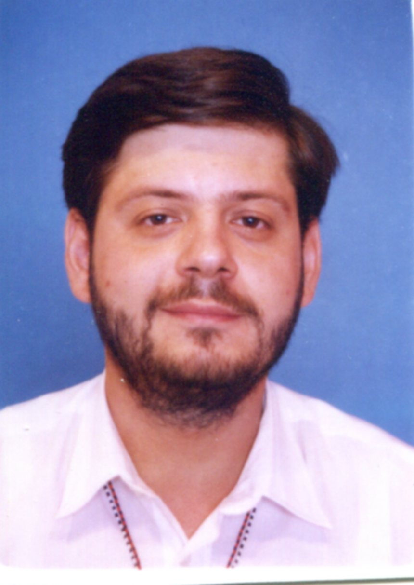

Marco Innocenti è nato a Firenze il 27/11/1971. Entrato nel seminario comboniano ha completato i suoi studi di teologia a Nairobi (Kenya) dove ha emesso i suoi votii perpetui il 7/10/2000. Ordinato sacerdote il 15 settembre 2001, dopo un periodo di studi in Italia, è stato mandato in Etiopia nel 2003 dove ha imparato la lingua nazionale, l’amarico. Inviato tra la popolazione Gumuz si è dedicato completamente allo studio della lingua, elaborando una grammatica.
Ritornato per un breve corso di studi in Italia, ha conseguito il dottorato in teologia biblica nel 2016 con una tesi dal titolo ‘Il Commentario etiopico Andemta a Mt. 1-4’. Attualmente vive e lavora in Etiopia.
Tra le sue produzioni: Note elementari di grammatica Gumuz, Arada Books 2008
